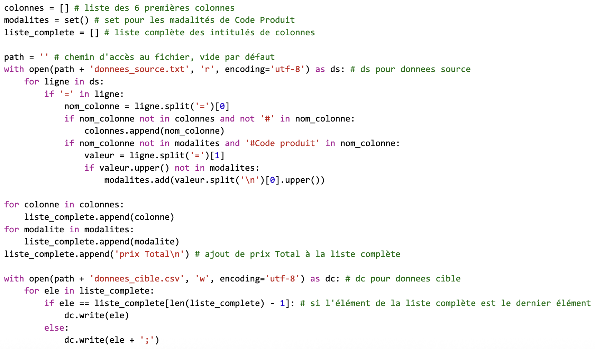
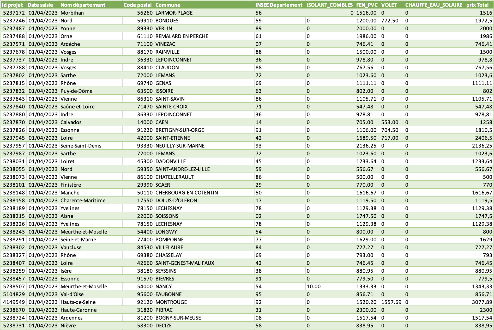
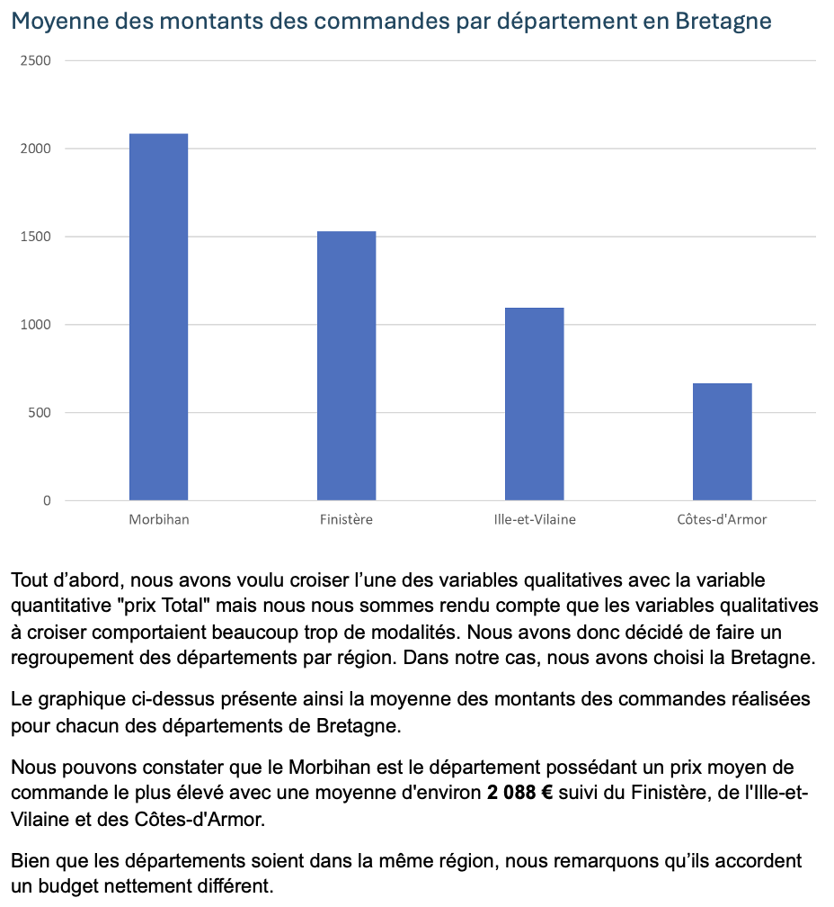

Cette capture d’écran montre le script Python développé pour traiter automatiquement un fichier texte brut. Il lit chaque ligne, extrait les noms de colonnes et les modalités de Code produit, puis construit dynamiquement une liste complète d’en-têtes insérée dans le fichier cible.
J’ai structuré ce programme avec des boucles, conditions et structures de données adaptées comme les listes et les ensembles (set()), en ajoutant quelques commentaires pour expliquer le traitement. Le code utilise des fonctions intégrées comme split(), append() ou encore write(), typiques de la manipulation de fichiers et de chaînes de caractères en Python.
Cette preuve démontre que j’ai acquis la compétence AC 11.02, grâce au respect des formalismes de notation : nommage explicite des variables, indentation claire et commentaires. Elle montre aussi que j’ai acquis AC 11.03, car j’ai utilisé la syntaxe du langage Python de manière rigoureuse pour manipuler, transformer et écrire les données. Enfin, elle valide AC 11.05, car j’ai su utiliser correctement les structures algorithmiques de base pour construire une solution efficace et lisible.
Cette image illustre le fichier CSV généré à l’aide du script. On y voit que les données sources ont été réorganisées selon les modalités extraites, et enrichies avec une colonne "prix Total" calculée automatiquement.
J’ai veillé à ce que le fichier respecte l’ordre des colonnes attendu, à vérifier l’intégrité des données et à produire un résultat exploitable sans erreur de format.
Cette preuve montre que j’ai acquis la compétence AC 11.01, car j’ai su traduire un besoin exprimé par le commanditaire en une solution technique fiable, conforme aux attentes. Elle démontre aussi que j’ai acquis AC 11.04, car j’ai analysé la structure des données pour adapter correctement les colonnes du fichier cible et garantir une organisation cohérente des informations.
Ce graphique présente la moyenne des montants des commandes pour chaque département de Bretagne, à partir des données traitées dans le fichier généré. Il repose sur l’exploitation de la colonne "prix Total" ajoutée automatiquement par le script.
J’ai réalisé un traitement statistique simple et conçu une visualisation claire et lisible pour comparer les départements entre eux, afin de mettre en évidence les écarts de budget.
Cette preuve valide la compétence AC 11.06, car elle illustre que j’ai compris l’intérêt de la programmation pour automatiser la création de données exploitables dans un but d’analyse.
Python
Dans cette SAÉ, je me suis mis dans la posture d’un consultant en intégration de données. Ma mission était de concevoir un programme capable de lire, transformer et réécrire des fichiers de données, en respectant un format cible imposé. Ce type de travail est essentiel dans les processus de migration ou d’échange entre systèmes d’information.
J’ai mobilisé les ressources bases de la programmation 1 (R1.03) pour concevoir un script structuré respectant les logiques de lecture et de transformation de fichiers.
J’ai développé un script Python capable de lire un fichier source (.txt), de transformer les données selon les spécifications fournies (nettoyage, renommage de colonnes, reformatage des types), puis de les exporter dans un fichier conforme au format attendu. J’ai respecté les contraintes du sujet, notamment en assurant la cohérence des transformations, en documentant chaque étape du traitement et en structurant le code de façon claire et réutilisable.
J’ai appris à interpréter un sujet technique, à structurer un programme simple mais fiable, à respecter des spécifications précises pour garantir la compatibilité des fichiers produits, à vérifier la cohérence des données transformées, et à documenter mon travail de manière claire pour en faciliter la compréhension et la réutilisation.
Compétences développées :
— AC 11.01 |Correctement interpréter et prendre en compte le besoin du commanditaire ou du client
J’ai su comprendre les spécifications de traitement des données (lecture, transformation, écriture) pour concevoir un script conforme aux attentes tout en garantissant la validité des fichiers générés.
— AC 11.02 |Respecter les formalismes de notation
Mon code respecte les bonnes pratiques de lisibilité : commentaires clairs, indentation cohérente, noms de variables explicites, afin de faciliter sa compréhension.
— AC 11.03 |Connaître la syntaxe des langages et savoir l’utiliser
J’ai utilisé efficacement la syntaxe Python (fichiers, conditions, boucles, listes, sets, chaînes) pour manipuler les données sans erreurs ni comportements inattendus.
— AC 11.04 |Mesurer l’importance de maîtriser la structure des données à exploiter
J’ai identifié et extrait les champs pertinents du fichier source, organisé dynamiquement les intitulés, et respecté la structure du fichier cible exigée.
— AC 11.05 |Comprendre les structures algorithmiques de base et leur contexte d’usage
Le script repose sur des boucles et des conditions, utilisées pour parcourir les fichiers et répondre aux exigences fonctionnelles.
— AC 11.06 |Prendre conscience de l’intérêt de la programmation
Ce projet m’a montré que l’automatisation à l'aide d'un script permet de fiabiliser les traitements et d’enchaîner des analyses exploitables très rapidement, notamment via des exports.